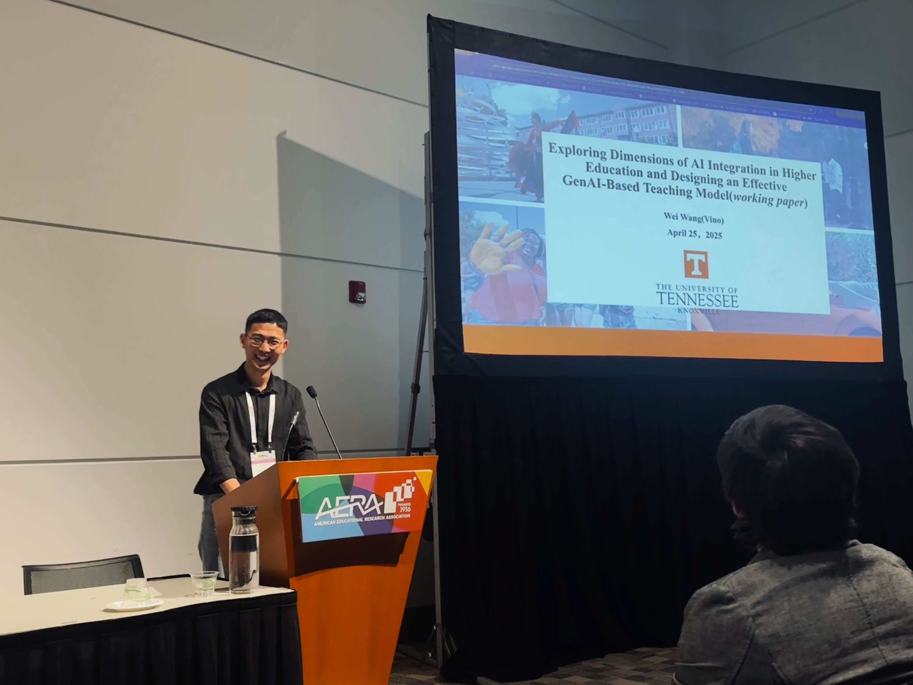

Exploring Dimensions of AI Integration and Designing an Effective GenAI-Based Teaching Model
Wei Wang (Vino) | AERA SIG Presentation | May 25, 2025

Part A: Exploring Dimensions of AI Integration
Background & Motivation
Generative AI offers powerful capabilities—automating routine tasks, enhancing writing self-efficacy, and sparking creativity—but also raises concerns about over‑dependence, diminished critical thinking, and academic integrity risks. To strike the right balance, we must understand the psychological and behavioral drivers that sustain effective, creative GenAI use in higher education.
Theoretical Frameworks
- ECM-ISC (Expectation Confirmation Model for Information Systems Continuance): Explains how users’ satisfaction and confirmation of expectations drive continued usage.
- I-PACE (Interaction of Person–Affect–Cognition–Execution): Models how affective and cognitive responses influence behavior and creativity.
Key Constructs
| Abbreviation | Construct | Definition |
|---|---|---|
| SAT | Satisfaction | Users’ contentment after initial GenAI use |
| AF | Affective Response | Emotional reactions during interaction |
| PT | Personality Traits | Stable individual differences (e.g., openness, conscientiousness) |
| COR | Cognitive Response | Reflective thinking and metacognitive processing |
| CI | Continuance Intention | Likelihood of future GenAI use |
| CR | Creativity | Generation of novel, useful ideas when using GenAI |
Research Questions
- RQ1: How do satisfaction, affective response, and personality traits predict students’ continuance intention to engage with GenAI?
- RQ2: Does cognitive response mediate the relationship between continuance intention and creative performance?
Methodology
- Participants: 259 undergraduates (67% female, 33% male) with GenAI usage of 2–5 times/week.
- Measures: Validated multi‑item scales (Cronbach’s α ≥ .75; AVE ≥ .50; composite reliability ≥ .80).
- Analysis:
- Descriptive statistics
- Reliability & validity checks
- Structural Equation Modeling (χ²/df = 3.91; CFI = .95; RMSEA = .06)
Key Findings
- Usage Purposes: Writing support and exploratory learning were most common, followed by academic assistance and entertainment.
- Reliability & Validity: All constructs met thresholds (α ≥ .70; AVE ≥ .50).
- Structural Paths:
- SAT → CI (β = .41, p < .001)
- AF → CI (β = .22, p < .01)
- PT → CI (β = .25, p < .01)
- CI → COR (β = .62, p < .001)
- COR → CR (β = .33, p < .001)
- CI → CR direct path was non‑significant (full mediation by COR).
Implication: Cognitive response is the central mechanism translating GenAI engagement into creative output.
Part B: Designing an Effective GenAI-Based Teaching Model
Using ADDIE instructional design, we integrate the six constructs into distinct phases:
| ADDIE Stage | Target Constructs | Core Strategies |
|---|---|---|
| Analysis & Design | Perceived Usefulness, Ease of Use | Demo video + interactive walkthrough with embedded quiz; instant AI feedback to build confidence. |
| Development | Affective Response, Social Influence | AI pair‑programming workshops; emotion cards (üëç/üëé) for real‑time feedback. |
| Implementation | Cognitive Response | Structured reflection logs (“What? Why? How?”); guided Socratic prompts to deepen metacognition. |
| Evaluation & Continuous Improvement | Satisfaction, Continuance Intention | Gamified prompts with badges & leaderboards; iterative prompt challenges to sustain engagement. |
| Extension | Creativity | Open‑ended mini‑projects: design AI‑enhanced micro‑lessons; peer showcase and feedback sessions. |
Implementation Plan
- Pilot: 8‑week module in Python Programming, 2 sections × 30 students.
- Facilitator Training: Two workshops on GenAI tools and model dimensions.
- Student Onboarding: Intro session, demo of reflection logs, and AI ethics primer.
Evaluation Strategy
- Quantitative: Re‑test SEM paths; pre/post measures of COR, CI, and CR.
- Qualitative: Text‑mining of reflection logs; focus groups on affective & metacognitive experiences.
Next Steps
- Refine reflection prompts and gamification elements.
- Scale model to humanities and STEM courses.
- Establish an instructor community for sharing GenAI integration best practices.
Thank you for engaging! Your comments and questions are welcome below.